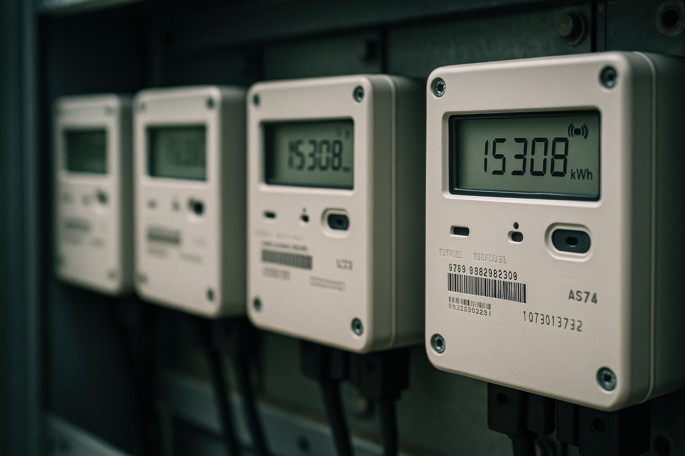

Slimme sturing doet meer dan uw verbruik verlagen. Ze speelt automatisch in op de prijsschommelingen van de energiemarkt — energiehandel als inkomstenstroom, binnen de grenzen van uw operatie.
Solar en een batterij verlagen verbruik — en dan blijft het stil. Dezelfde assets kunnen méér: hun flexibiliteit is actief te verhandelen. Die tweede laag blijft bij vrijwel iedereen onbenut.
Een batterij die alleen pieken afvlakt, benut maar een fractie van zijn waarde — de rest van de dag doet hij niets.
Capaciteit onbenutSpot, onbalans en congestiemarkten betalen voor flexibiliteit — maar zonder sturing en toegang loopt u die mis.
Opbrengst blijft liggenRealtime handelen vraagt een EMS, markttoegang en 24/7 sturing — geen taak om zelf op te pakken.
Geen kernactiviteitPrijsverschillen tussen daluren en pieken blijven liggen zonder gestuurde in- en verkoop.
De onbalansmarkt betaalt voor snel bijregelen — een opbrengst die nu naar derden gaat.
Zonder handel duurt het langer voordat de investering in opslag zich terugbetaalt.
Dezelfde assets leveren een tweede inkomstenstroom. Vibe stuurt batterij, solar en laadinfra en verhandelt hun flexibiliteit op de markten — automatisch via het EMS, binnen vooraf vastgelegde operationele grenzen.
— Vibe Energy · positie
Inkopen wanneer stroom goedkoop is, inzetten of verkopen wanneer de prijs piekt.
Realtime bijregelen op tekorten en overschotten — de markt betaalt voor snelheid.
De batterij levert reservevermogen (FCR/aFRR) aan de netstabiliteit.
Flexibiliteit aanbieden waar het net knelt — lokale waarde, slim ingezet.
Energiehandel staat niet los — het is een inkomstenstroom binnen het bredere exploitatiemodel van een lokale energiecentrale, waarin besparing, capaciteit en markthandel samenkomen.
Bereken uw potentieelOpbrengst indicatief · sterk afhankelijk van assets, markt en regelgeving.
Wat flexibiliteit oplevert, hangt sterk af van uw assets en de markt.
Stel uw vraagEén gesprek waarin we techniek, markten en exploitatie samenbrengen — met een eerste beeld van wat flexibiliteit op uw locatie kan betekenen.